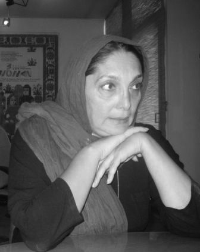
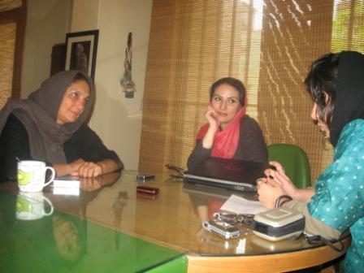

|
|

منیژه حکمت ، کارگردان زندان زنان و سه زن :
اگر یک کنشگر و فعال جنبش زنان بودم یقه فیلمساز را می گرفتم
گفتگو : آیدا سعادت - آزاده فرامرزی ها/ عکس :نوشین جعفری
يكشنبه19 آبان 1387
منیژه حکمت متولد 1341 و کارگردان سینماست که دومین ساخته بلند او "سه زن" را این روزها بر پرده سینما می بینیم. فیلم نخست او "زندان زنان" (1380) نام او را به عنوان یک کارگردان صاحب سبک و نظر مطرح نمود و بارها به دلیل نگاه تازه و جسورانه اش به فضای زندان در جشنواره های خارجی و داخلی مورد تقدیر قرار گرفت. فیلم جدید او اگرچه باز هم به زنان اختصاص دارد, و گاه اندک اشاراتی به زندان زنان هم در آن دیده می شود, اما به طور کلی با فیلم قبلی متفاوت است.
سه زن روایتگر قصه سه نسل از زنان جامعه است که یکدیگر را گم کرده و در جستجو برای یافتن پیوندهای گمشده یکدیگر را بازمییابند. فیلنامه آن را نغمه ثمینی نوشته و فیلم محصول سال 85 است. گفتگوی کوتاهی با منیژه حکمت کارگردانی که همواره پرداختن به مسائل اجتماعی و تبعیض های جنسیتی که بر زنان روا داشته می شود دستمایه ی اصلی آثار سینمایی وی بوده است انجام داده ایم که در پی می آید.

از منیژه حکمت فیلمساز زنان و نگاهش به مقوله ی جنسیت که یکی از اصلی ترین المان های آثار سینمایی اوست برایمان بگویید. چه شد که این مقوله را شالوده آثار سینمایی خود قرار دادید؟
حکمت: منیژه حکمت یک زن 46 ساله است با دغدغه ها و نگرانی ها و تنهایی های خودش در میان دنیایی که گاهی وقت ها نمی دانی چه هست. به خصوص در فضای فعلی سینمای ایران که پر از سوء تفاهم و رفتارهای عجیب و غریب است. او هم سعی می کند در این میانه کاری کند. و چرا زن ؟ زن از یک حس ناخودآگاه می آید. گاهی اوقات خودم هم به کارهایم نگاه می کنم و می بینم این زن در همه کارهایم حضور دارد حتا موضوع آخرین فیلم من "لالایی" هم زن است. این زن در ناخودآگاه ذهن ما و پروسه ها و دوران های تاریخی ما با تمام مشکلات و تعارضاتی که در این بستر تاریخی هست حضوری فعال دارد و حضور خود را به رخ می کشد. تو به یکباره متوجه می شوی که در جریانی قرار داری و فیلم می سازی که محور آن زن است. هر چند که زن در اسطوره ها و آیین های ما نماینده ی باروری و زایش است، اما تمام این ها در یک بخش ذهن ما جمع می شود. ما خودمان هم زن هستیم و این مزید بر علت است و مسائلی را که از دوران های تاریخی به همراه داریم درزمان معاصر با خود حمل می کنیم. این موضوعات برای من جذابیت دارد و نمی توانم منکر شوم که دغدغه ها و تعصباتم هم بیشتر است. چون زن در ایران تعریف خاصی دارد که در هیچ کجای دنیا ندارد و در همین دنیای معاصر زنی است با تمام محدودیت هایی که برایش نوشته اند. چه بخواهد و چه نخواهد قانون نانوشته ای که حق او نیست، با کمترین هزینه حضور دارد و فعال است و حرکت رو به جلو دارد. مجموعه ی این مسایل و حس ناخود آگاه باعث می شود که من می بینم که وسط جریانی قرار گرفته ام که محورش زن است.
آیدا سعادت: نقطه ی شروع این دغدغه کجا است؟ پیش از ساخت فیلم هایی همچون زندان زنان و در آثار مستندی که ساخته اید زن و مساله ی جنسیت همچنان حضور دارد. از چه زمانی این مقوله برایتان اهمیت ویژه پیدا کرد و محور آثار سینمایی و مستند شما قرار گرفت؟
حکمت: به هر حال نمی توان جدا از حرکتی که در جامعه است حرکت کرد. ما که در اتاق مان نمی نشینیم و فیلمنامه بنویسیم. در بستر این جامعه با مردم زندگی می کنیم. به خصوص من خیلی به این موضوع قائلم که باید در میان مردم باشم. به هر حال این موضوع قابل انکار نیست که نسل ما تجربه های مختلف و نگاه عجیبی به مجموعه شرایط اش دارد و دوران های عجیبی را از سر گذرانده است. این اتفاق نمی تواند برای هر نسلی در دنیا بیفتد. هم انقلاب را تجربه کند، هم جنگ، هم اصلاحات و هم قوانین عجیب و غریب. این زن همواره محور بوده است. زن ایرانی که قرار بوده طبق تفکری که حاکم است، دیده نشود اما حذف شدنی نیست، مدام حضور دارد و همیشه کاری کرده است که به چشم بیاید. این خودش سینما است و جذابیت دارد. من زن هستم و نیمی از این جامعه هم زن هستند. من باور دارم که اگر زنان یک جامعه آزاد نباشند جامعه آزاد نخواهد بود.
آیدا سعادت : در پروسه کارهای فیلم اخیرتان در مطبوعات خبری منتشر شد که منیژه حکمت گفته است به خاطر اعتراض به لغو پروانه فعالیتش جلوی اداره ارشاد دست به سیگار فروشی خواهد زد. ماجرا از چه قرار بود؟
حکمت: بله سر همین سه زن که در حال اکران است این اتفاق افتاد. بعد از زندان زنان نتوانستم کار کنم، دولت آقای احمدی نژاد آمده بود و برای مدت شش ماه به من گفتند که صلاحیت فیلم سازی نداری . من گفتم در این مملکت خیلی ها هستند که صلاحیت ندارند اما کسانی که صلاحیت دارند ما هستیم و اعلام کردم که چنانچه مجوز فیلم سازی من را ندهید سیگار فروشی می کنم. چیزی ندارم که از دست بدهم. فیلم سازی شغل من است و اگر قرار باشد در این شرایط اقتصادی زندگی کنم باید فیلم بسازم. اگر نتوانم فیلم بسازم مجبورم کار دیگری کنم حتا سیگار فروشی. البته هنوز کار به آنجا نکشیده بود و من حتا باکس های سیگار را هم خریده بودم و جعبه های میوه را هم خریده بودم از همین میوه فروشی همسایه که اعلام کردند مشکل مجوز فیلم سازی ام حل شده است.

آزاده فرامرزی ها: شما خودتان یکی از امضا کنندگان کمپین هستید. دیدگاه شما نسبت به این فعالیت اجتماعی چیست و چه اتفاقی افتاده است که شما که یکی از امضا کننده های کمپین هستید مستقیما به این مقوله نمی پردازید.
حکمت: من قبلا یک مصاحبه هم در این مورد داشته ام. اعتقاد دارم که ما مشکلات فرهنگی بسیار زیادی داریم. ما باید شرایط فرهنگی زنان را عوض کنیم. حتا مسایل پیش پا افتاده را هم باید در مرکز توجه قرار بدهیم. از طریق نهاد های مدنی که می توانند فعال باشند. زن ایرانی اگر متوجه بشود حق طلاق برایش مهم تر از مهریه است و به این نکته برسد و ما یک میلیون ازدواج داشته باشیم که همه زنان این حق را بخواهند این قانون خود به خود عوض می شود. اگراین آگاهی های اولیه به زنان ایران داده شود اطمینان دارم که خیلی چیزها عوض خواهد شد و خوشبختانه اتفاقات خوبی دارد می افتد. این ها حقوقی هستند که از آن زنان ایرانی و البته تمام زنان دنیا هستند. ما اگر بیاییم از لایه های زیرین اجتماعی کار را به صورت زیربنایی شروع کنیم و اول حقوق زنان را به آنان بشناسانیم و بعد بیاییم کمپین ایجاد کنیم کار موثر تری انجام شده است. این حق طبیعی زن ایرانی است که اول بداند که حقوقش چه هست و در چه شرایطی زندگی می کند. در این صورت ما هم هزینه کمتری خواهیم داد و هم تاثیر گذاری بیشتر خواهیم داشت. من برای این جنبش که هزینه بسیاری هم برای آن پرداخته شده و می شود احترام زیادی قائل هستم و فکر می کنم اگر کار را از میان اجتماع شروع کنیم راهبرد بهتری خواهیم داشت تا این که از بالا بخواهیم چیزی را تغییر دهیم. دلم می گیرد وقتی می بینم که در چنین شرایطی هنوز به یک میلیون امضا نرسیده ایم.
آزاده فرامرزی ها: سوال من هم دقیقا همین است. این فرهنگ سازی و آگاهی دادن کاری است که در کمپین انجام می شود و این کار راه های دیگری هم دارد مثل کاری که شما انجام می دهید . چطور می شود یک فیلم ساز بیاید و به یک مورد به قول شما پیش پا افتاده ای مثل حق طلاق در فیلم اش بپردازد و این مساله را به زنی که این فیلم را می بیند بشناساند.
حکمت: من بعد از کمپین و تظاهرات بچه های جنبش زنان به این موضوع رسیدم و دنبال فیلمنامه ای هستم که این حق و حقوق زن ایرانی را به او از طریق فیلمی بشناسانم و این که نشناختن این قانون و حق و حقوق برای زن چه مخاطراتی دارد را به تصویر بکشم. به هر حال این قانون با تمام ایراداتی که به آن وارد می دانیم راه های بسیاری هم پیش روی زنان گذاشته است. ما می توانیم این راه ها را به زن ایرانی بشناسانیم. که مثلا به جای پرداختن به موضوع مهریه که در صفحه اول عقدنامه آمده است بد نیست صفحات دیگر آن را هم ورق بزنند و بخوانند و با آگاهی امضا کنند. آنوقت است که می توانند انتخاب کنند. این اتفاق ملموسی است که هزینه ای هم بابت آن پرداخته نمی شود و بچه هایمان هم بابت آن اذیت نمی شوند. زن ایرانی هم یاد می گیرد که این دفترچه را ورق بزند و این چند حق را هم بگیرد. به نظر من مرد ایرانی که حاضر به پذیرفتن این حقوق نباشد، مرد ایده آل زندگی نسل فعلی دختر ایرانی نیست. من دلم می گیرد وقتی می بینم که چه اتفاقاتی برای فعالان حقوق زنان و کمپین می افتد و فکر می کنم که می شود راه هایی پیدا کرد که کم هزینه تر و موثر تر هم باشند. در این شرایط است که می توانیم قانون را عوض کنیم.
آزاده فرامرزی ها: ما می دانیم که جریان سانسور و یا ندادن مجوز به بعضی از کارها بسیار اتفاق می افتد. این مساله چقدر در کار یک زن فیلم ساز موثر است و به طور کلی چه تاثیری در منفعل کردن سینمای غیر گیشه ای و متفکر دارد؟
حکمت: چیزی که من همیشه گفته ام و اغراق هم نمی کنم این است که در سینمای ایران تفاوت چندانی میان زن فیلم ساز و مرد فیلم ساز وجود ندارد. حتا شاید شرایط برای من زن فیلم ساز به مراتب بهتر است . ما هم شیوه هایی را با شکل های مختلف رفتاری یاد گرفته ایم که به کارمان کمک می کند. مرز بندی هایی که در سینمای ایران اتفاق می افتد بر اساس تفکر است و ما منفعل نمی شویم. فیلم لالایی ها هم تمام شد و این فیلم هم آماده اکران است. این مملکت ما است و دوستش داریم. می دانیم در چه شرایطی اجتماعی کار می کنیم و به کار خود ادامه خواهیم داد. مطمئنا بسیاری جاها به بلوک های سیمانی زیادی برخورد خواهیم کرد اما راه برون رفت از این مشکلات را هم پیدا می کنیم.
آیدا سعادت: عمده ترین مشکلات شما و زنان فیلم ساز دیگر چه مشکلاتی هستند؟
حکمت: ببینید هر مشکلی که برای تمام فیلم سازان وجود دارد برای من هم هست. از همان دست مشکلاتی که همواره در جریان سینمای مستقل ایران از ندادن مجوز تا مسائل دیگر بروز می کند. فیلم سه زن قرار بود عید اکران شود که نشد. بعد قرار شد تابستان اکران شود و باز هم نشد و بالاخره برای عید فطر مجوز اکران را صادر کردند. طبیعتا من که فیلم ساز بخش خصوصی هستم هم مشکلات مالی خود را دارم. از طرفی فراهم کردن سرمایه مورد نیاز برای ساختن فیلم انرژی زیادی از ما می گیرد. ما تنها با چهار درصد از انرژی خود سر فیلمبرداری حاضر می شویم. چون تمام انرژی مان در بخش پیش از تولید تخلیه شده است و وقتی هم که فیلم آماده می شود استرسی که در مرحله ارائه فیلم به ارشاد متحمل می شویم جریان دارد. حالا باید دید ارشاد چه نظری دارد و بعد صورت جلسه ای می آید که این بخش ها باید سانسور شود. آخر به چه دلیلی؟ حتا برای تبلیغات و بیلبوردهای خیابانی طرحی را به ارشاد ارائه کردیم که مجوز بدهند و مهر کنند در جواب گفتند که ما عکس زن را مهر نمی کنیم! گفتم من از طرف خداوند از شما معذرت می خواهم که زن را آفرید! حالا شما بفرمایید با این موجود زن چه باید بکنیم؟ مگر شما می توانید یا اجازه دارید که زن را حذف کنید؟ انگار حضور زن برای اینها مساله عجیب و غریبی شده است. خب یک لیست می آید از مواردی که باید سانسور شود و چانه زنی ها شروع می شود که در نهایت هم باید سانسور کنیم و می کنیم اما مجبوریم طوری این کار را انجام بدهیم که چارچوب کار از دست نرود. به هر حال من سه سال زحمت کشیده ام و تحقیق کرده ام تا فیلمنامه ای را بنویسم. فیلم را ساخته ام که مردم ببینند و با این شرایط مردم چه می بینند؟ بعضی فیلمها فیلم گیشه ای هستند و اگر پنجاه دقیقه از آن هم سانسور شود مشکلی پیش نمی آید و در سینما فروش می کند. ما برای این که سینما درست تعریف شود و فیلم ما درست از آب در بیاید هزینه های سنگین می پردازیم.
آزاده فرامرزیها: یک جریان زن ستیز در سینمای ایران حضور دارد. درصد زیادی از فیلم هایی که ساخته می شوند در عمل زن ستیزی را ترویج و تبلیغ می کنند. آیا جریان فیلم سازی متفکر و مستقل نمی خواهد عکس العملی به این جریان نه چندان نوظهور نشان دهد؟
حکمت: بله متاسفانه نمونه های زیادی از این فیلم ها را در صدا و سیما هم می بینیم. واکنش هم نشان داده ایم اما بیشتر متاسف می شویم برای فیلم سازان و بازیگرانی که این فیلم ها را بازی می کنند. بسیاری از این بازیگران و فیلم سازان ادعای روشنفکری دارند و بعد می بینیم که وقتی فیلم ارائه می شود چیز دیگری است. باید پرسید آیا شما این فیلم ها را می سازید که تماشاچی جذب کنید؟ آیا این سوژه ها خوشایند زن ایرانی است؟ یا مرد ایرانی این قدر طرفدار چند همسری است؟ اصلا این تفکر قرون وسطایی از کجا می آید که شما فیلم اش را می سازید ؟ در حالی که وقتی این فیلم را در قالب ژانر کمدی وارد سینما می کنید و تماشاگر را به سینما می کشانید دارید خیانت می کنید. اینطور نیست که باری به هر جهت کاری ارائه و تمام شود. یک روز باید در مقابل تمام این کارها پاسخ داده شود. به هر حال این انتقاد شدیدا وجود دارد. هر چند که چه فیلم سازان ما، کسانی که قانون می نویسند و کسانی که در مجلس این قوانین را تصویب می کنند باید بدانند که زن ایرانی به چنین قانونی تن نمی دهد و حتا زن سنتی ایرانی هم می داند که چه می کند. به نظر من در این قوانین و رفتارها نوعی بی اعتباری و بی حیثیتی وجود دارد. این که کاری ندارد! کافی است به یک دادگاه خانواده مراجعه کنند. من حتا می بینم که دختری از حاشیه شهر ما هم وقتی از طرف مردی تهدید به کتک می شود می آید و دادخواست طلاق می دهد. من خوشحالم آمار طلاق در ایران بالا است هر چند که ناهنجاری های خودش را هم دارد اما من یک نگاه مدرن به این قضیه دارم. زن ایرانی دیگر این مسائل را نمی پذیرد و حق خودش را مطالبه می کند. هزینه هم می دهد و پوستش هم کنده می شود اما حاضر است پای همه هزینه ها بایستد و طلاقش را بگیرد. این آمار را بگیرند و بعد بروند فیملش را بسازند. گرچه آمار درست در این مملکت اصلا وجود خارجی ندارد.
آزاده فرامرزی ها: کمی در مورد فیلم های مستند تان حرف بزنید. در حوزه زنان فیلم مستندی کار کرده اید؟
حکمت: من از سال 59 با دستیار کارگردانی شروع کرده ام، بعد برنامه ریز و سپس مدیر تولید و در نهایت کارگردان شدم. مستند را خیلی دوست دارم و این مستند حتا در کارهای من هم حضور دارد. من در بطن جامعه حرکت می کنم . آزادی عمل زیادی هم دارد. خودم هستم، یک دوربین و یک صدا بردار و نیازی هم به مجوزهای دست و پاگیر نیست. راحت حرفی را که می خواهم بزنم، به تصویر می کشم. البته فیلم سینمایی برد بیشتری دارد. وقتی از 70 فستیوال دعوتنامه می آید برای اکران سه زن یعنی این فیلم دیده می شود یا مثلا در ایران تبلیغات می شود و مردم می آیند و فیلم را می بینند اما مستند چنین بردی را ندارد ولی تاریخ و بسیاری از اتفاقات را ثبت تاریخی می کنم که میراث من به نسل آینده خواهد بود تا حداقل آنها با این تصاویر کمی حافظه تاریخی داشته باشند. در حوزه زنان هم فیلم مستند ساخته ام. من از ان جی او های زنان درسطح ایران فیلم مستند ساخته ام. آن دوران دوران بسیار شیرینی بود. حالم در آن دوران خیلی خوب بود. "زنان از خانه بیرون می آیند" که فیلم بسیار کوتاهی است را کار کرده ام اما خیلی خوب از کار در آمد و در دنیا هم برد خوبی داشت. باورشان نمی شد زن ایرانی این چنین در تمام عرصه ها حضور دارد و کار می کند و نگاه و بینش و اندیشه خودش را دارد. یک فیلم مشترک کار کرده ام به نام "من اتاقم و دوستانم" که کارگردانی مشترک من و داریوش عیاری است و با همکاری زنان بیمارستان رازی یا همان امین اباد ساخته شده است. حدود 200 ساعت راش از خیلی اتفاقات مختلف هم ثبت کرده ام.
آیدا سعادت: برگردیم به کارهای سینمایی شما. از زندان زنان برایمان بگویید. از تجربیات ملموس خود در برخورد با زندان وزنان زندانی و بازخوردهایی که در نهایت از این فیلم گرفتید. این فیلم با اقبال عمومی مواجه شد و حتا در ذهن بسیاری از کسانی که به مقوله جنسیت نگاه ویژه ای دارند "زندان زنان" برایشان یک فیلم شاخص است . با چه نگاهی به سراغ این فیلم رفتید؟
حکمت : نتیجه ی یک سال و نیم تحقیق در زندان زنان و دادگاه ها که تجربه ی خوبی بود. خواندن و خواندن و خواندن خاطرات زنان زندانی از نسل های مختلف و مصاحبه و کار و قصه های کوچکی که می شنیدم. "زندان زنان" را دوست دارم اما فیلم بسیار سختی بود. تم اصلی این فیلم ایدئولوژی است. همه آن قصه ها واقعی بودند و تم اصلی پرداختن به این موضوع بود که گاهی به خاطر ایدئولوژی نمی توانیم کنار هم خوب زندگی کنیم ، با تفکری که داریم نمی توانیم با هم گفتگو کنیم و به هم احترام بگذاریم و یا با تفکری که به نظر من انسانیت در ان جایی ندارد نمی گذاریم با هم پیر شویم، این موضوعات تم این قصه بود ومجموعه ای از قصه های کوچک که زنجیر وار به هم وصل کردم. به هر حال آن دوران من در زندان بهترین محقق بودم و بیشترین دانش را از شرایط زندان زنان در ایران داشتم. انتقاد زیادی به شرایط زندان داشتم و نبودن عدالت اجتماعی عاملی بود که زندان را برای این زنان رقم زده بود. اگر ما عدالت اجتماعی داشتیم نود درصد آن زنان در زندان نبودند. اگر قانون را درست نوشته بودیم خیلی از زنانی که شوهر کشی کرده اند را نداشتیم، چون همه این ها در دادگاه برای طلاق پرونده داشتند و نتوانسته بودند طلاق بگیرند. اگر به مطالبات رسیدگی می شد این زنان در زندان نبودند. به هر حال این شرایط کشور و جامعه ی ما است ولی من زندان را حق نود و نه درصد از آن زندانیان نمی دانستم. اگر ریشه یابی می شد مشکلات اقتصادی نقش بسیار زیادی داشتند. زنی که به خاطر مخارج زندگی و کرایه خانه اش تریاک را از شهری به شهر دیگر می برد تا صد هزارتومان بگیرد قاچاقچی نیست. قاچاقچی کسانی هستند که با کانتینر مواد جا به جا می کنند وهیچ کدام از آنها را هم در زندان نمی بینید! بچه هایی که در زندان بودند شرایط دردناکی را داشتند. دیدن این مسائل باعث شده بود که دوره ی سختی را بگذرانم اما دیدن زندان زنان منجر به ساخت آن فیلم شد و ماند.
آیدا سعادت: مهمترین تاثیری که شما بعد از اکران فیلم زندان زنان گرفتید چه بود؟
حکمت: شنیدم که بعد از اکران فیلم زندان زنان بود که آیت الله شاهرودی دستور دادند که آخرین حکم باید زندان باشد اما در عمل دیدیم که اولین حکم همیشه زندان است!
آزاده فرامرزی ها: از نظر من به عنوان یک مخاطب زندان زنان در آن زمان جسورانه بود اما این فیلم به نوعی ثبت تاریخی از یک دوران بود. به خصوص برای کسانی مثل من که هنوز هم زندان را ندیده ایم زندان اوایل انقلاب و آنچه مهم بود حضور سه نسل و شاید لایه لایه کردن اجتماع در قالب سه نسل از زنان بود این ویژگی در فیلم جدید شما هم وجود دارد . راجع به این مساله توضیح دهید.
حکمت: در مورد جسورانه بودن نظر خاصی ندارم. من هر فیلمی که فکر کنم درست است را می سازم بعد دیگران هستند که قضاوت می کنند. اما در مورد ویژگی سه نسلی که اشاره کردید در فیلم سه زن این ویژگی کلی تر است. سه زن را که می بینید اگر بحثش را باز کنید و متوجه ی آن شوید دیگر زندان زنان نخواهیم داشت. زندان زنان شاخه ای منشعب از این سه نسل است و می تواند شاخه های دیگری هم داشته باشد. سه زن دغدغه ی کلی من راجع به فاصله ی میان نسل ها بوده است. راجع به نسل خودم که بی آن که که گذشته را خوب ببینم و حافظه ی تاریخی داشته باشم سرنوشت را برای نسل های آینده ام رقم زدم و هیچ گاه در مقابل آن پاسخگو نبوده ام. نسل من هیچگاه خودش را نقد نکرده است. چون گذشته را درست ندیده است نمی تواند برای آینده هم راه و رسم درستی را ترسیم کند. این اجازه را ندارد که راه و رسم را برای نسل بعدی ترسیم کند و این فاصله میان نسل ها است. نسل جوان هیچ ارتباطی به من پیدا نمی کند. من وظیفه ام آن است که بدوم و اجازه ندارم که به نسل جوان تحکم کنم. نسل جوان با تمام انتقاد هایی که نسل من به او دارد از جمله این که می گوید بی هویت است، بی آرمان است و .. می داند چه می کند و اگر هر بلایی به سرش آمده است نسل من برایش رقم زده است. نسل من .. نه من یعنی مجموعه ای از این سن، برایش رقم زده است که باید جوابگو باشد و نمی تواند شانه خالی کند. یعنی از نسل من کسی که مسئول در هر جای مملکت است چه من روشنفکر، چه معلم چه فیلسوف و چه استاد دانشگاه.. نسل من این شرایط را برای نسل جوان رقم زده است و این فاصله هر روز بیشتر می شود. این برای جامعه ی ما نگران کننده است. من فکر می کنم اگر این سه نسل ما همدیگر را به شکلی پیدا کنند ایران ما بیش از این لطمه نخواهد خورد و سرنوشت ما خیلی عوض خواهد شد. تمام مشکل ما الان این است که سه نسل ما همدیگر را گم کرده اند.
آزاده فرامرزی ها: شما این سه نسل را در زندان زنان خیلی واقع گرایانه نگاه کرده اید این فیلم به ظاهر نگاه استعاری تری دارد. این نگاه استعاری ناشی از چه بوده است؟
حکمت: سه زن را اصلا استعاری نمی دانم. یک قصه ی رئال است که به نظر خودم هیچ استعاره ای ندارد. شاید نماد فرش که در همه جای زندگی ما حضور دارد و فرش های نیمه بافته ای که هرگز اجازه ندادند در بستر تاریخی ما ببافیم اش و کامل اش کنیم و همیشه مجبورمان کردند که نیمه بافته از دار پایین اش بکشیم. تنها این است که به این شکل هم به آن پرداخته نشده است. همیشه به عنوان دار قالی در لوکیشن های مختلف حضور دارد و باز در آخر کار نیمه بافته از دار بریده می شود و روی تابوت انداخته می شود. به نظر من این نگاه استعاری نیست و کاملا رئال است. اگر مادر بزرگ ما آلزایمر دارد زن آلزایمری این است. اگر مینوی ما با تمام مسئولیت پذیری و آرمان خواهی اش در شب تاریکی گمگشته است همین است یا پگاهی که بیرون می زند تا در این بستر تاریخی به نوعی کشف و شهود دست یابد هم واقعی و رئال است. یک چیزی هست و تماشاچی باید به این فکر کند. مشکل تماشاچی ما این است که نمی خواهد فکر کند و می خواهد تنها برود فیلم ببیند و برگردد و تمام شود. شاید به این دلیل که خسته است و دیگر نمی خواهد فکر کند. از این زاویه هم می توان دید. به هر حال اطمینان دارم که وقتی از سالن بیرون می آیید ماجرا تمام نشده است و دست کم بیست و چهار ساعت با این فیلم خواهید بود.
آیدا سعادت : فعالان جنبش زنان به مقوله ی زنان و جنسیت به عنوان ماجرایی نگاه می کنند که نیاز به اقدامات مشخص و واکنش هایی به موقع دارد تا آثار تبعیض جنسیتی در زندگی زنان را به حد اقل برساند و شما به عنوان فیلمساز ابزار و مدیایی دارید که شاید همان مسائل را از طریق آن بیان می کنید. بیایید جایمان را عوض کنیم. اگر شما یک فعال حقوق زنان و یک کنش گر اجتماعی بودید نگاهتان به یک زن فیلم ساز و انتظاراتتان به عنوان یک اکتویست از او چه بود؟ در این شرایط انتظاراتی که به عنوان کنشگر اجتماعی مد نظرتان بود از فیلم ساز چه بود؟
حکمت: من اگر یک کنشگر اجتماعی و فعال جنبش زنان باشم یقه ی فیلم ساز را خواهم گرفت و توقعم بالا خواهد بود چون خیلی ادعا زیاد است. من یقه فیلمساز را می گیرم. می گویم تو فیلمساز زنان هستی و با این شرایط اجازه نداری زد و بند کنی و باج بدهی. این چارچوب فکری درستی است و اگر لازم باشد باید هم یقه گیری شود. به عنوان فیلم ساز در مصاحبه ها شعارهای بسیاری داده می شود اما عملکرد چیست؟ من اگر فعال جنبش زنان بودم انتقاد و یقه گیری می کردم و به فیلمساز می گفتم تو اجازه نداری شعاری بدهی و رفتار دیگری داشته باشی. این کار هزینه دارد درست مثل هزینه هایی که جنبش زنان در این شرایط می پردازد. اگر فیلمساز هم روی اصول اش بایستد هزینه خواهد داد. نمی توانیم این هزینه را ندهیم و تمام پوزیشن های روشنفکری را داشته باشیم و کار دیگری بکنیم. تمام این کنش ها در تاریخ باقی خواهد ماند. من نمی گویم از جنسیت فیلم بساز اما برای فیلم سازهایی که مدعی هستند شرایط اجتماعی ما شرایطی است که باید هزینه اش را بپردازیم و فیلم بسازیم و ثبت کنیم، این باید است.
آیدا سعادت: خانم حکمت از وقتی که در اختیار ما قرار دادید سپاسگذاریم.